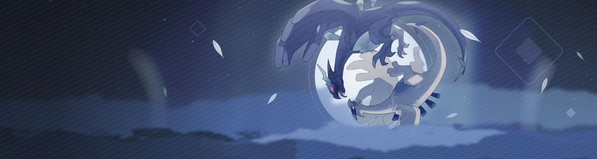

La zone
Voir les Pokémon de la zone →
À perte de vue, Izdahar déploie un océan de dunes dorées, dont les crêtes se déplacent au gré des vents et effacent les traces des voyageurs. Sous un soleil implacable, l'eau est un trésor, l'ombre une bénédiction et chaque traversée une épreuve. Lorsque vient la nuit, pourtant, la chaleur cède à la fraîcheur et les étoiles dessinent des routes que le sable refuse de conserver.
Les premiers explorateurs à découvrir ces terres ont appris à composer avec leurs caprices. Autour des oasis sont nés des lieux de vie, des marchés et des traditions façonnées par la nécessité. Les caravanes relient ces refuges dispersés, tandis que les Pokémon de type Sol règnent sur les étendues sauvages. Certains racontent aussi que des esprits malicieux se cachent parmi les mirages, prêts à égarer les imprudents ou à récompenser les voyageurs généreux.
Izdahar n'est pas une terre que l'on conquiert. C'est un désert que l'on apprend à écouter, aussi austère que merveilleux, où chaque oasis ressemble à une promesse arrachée à l'immensité.
Points d'intérêt de la zone

Élevée autour d'une oasis généreuse, Azhar est la principale cité d'Izdahar. Ses bâtiments de pierre blonde, ses coupoles, ses cours ombragées et ses jardins suspendus offrent un refuge contre la morsure du soleil. Des canaux alimentent les cultures et les fontaines, tandis que les marchés bruissent de conversations, de marchandages et de récits rapportés des dunes.
Fondée par les premiers voyageurs ayant apprivoisé le désert, la ville s'est développée au rythme des besoins de ses habitants. Ici, les savoir-faire traditionnels côtoient des installations pensées pour économiser l'eau, protéger les habitations de la chaleur et guider les caravanes. Au cœur de cette effervescence se trouve le Bazar des Colporteurs, où les affaires les plus ordinaires voisinent avec des négociations nettement plus discrètes.

Au milieu des dunes apparaît un refuge de verdure où les caravanes viennent reprendre haleine. Autour d'une oasis fleurissent des tentes richement décorées, des auvents colorés et des jardins entretenus avec une patience précieuse. Marchands ambulants, artisans, conteurs et voyageurs s'y croisent avant de repartir vers d'autres horizons.
Les Jardins d'Iram ne sont jamais tout à fait les mêmes d'une visite à l'autre : les campements se déplacent, les étals changent de mains et de nouvelles histoires remplacent les anciennes. On y échange des vivres, des nouvelles et des conseils pour traverser le désert. Sous les lanternes du soir, cette halte nomade prend parfois les allures d'un palais éphémère.

Loin des oasis hospitalières, le sable s'ouvre sur une déchirure brûlante. Dans le souffle d'Al-Nâr, des flammes jaillissent de fissures profondes et éclairent les parois d'une lueur rougeoyante, même lorsque le soleil a disparu. La chaleur déforme l'horizon, tandis que le vent s'engouffre dans les cavités et produit des murmures semblables à des voix.
Les voyageurs parlent de djinns, de promesses trompeuses et de silhouettes entrevues entre deux bourrasques. D'autres n'y voient que des gaz en combustion et des mirages particulièrement cruels. Quelle qu'en soit l'origine, les Pokémon qui fréquentent ces terres se montrent farouches et les pistes sont dangereuses. Ceux qui s'y aventurent doivent se méfier autant du sol que de leurs propres sens.
Boss de la zone
Voir la fiche du boss : Shérazarde →Donjon de la zone

Dissimulée sous les étendues arides d'Izdahar, l'Oasis de Cristal est un sanctuaire souterrain que rien, à la surface, ne laisse deviner. D'immenses cristaux illuminent les galeries de reflets bleus, roses et dorés. Entre leurs parois scintillantes s'étendent des bassins limpides, des jardins impossibles et des formations minérales qui évoquent les salles d'un palais oublié.
Les Pokémon de type Fée y trouvent refuge, loin de la chaleur et des dangers du désert. Mais les merveilles de l'oasis ont leurs propres pièges : les reflets se multiplient, les chemins semblent changer et certains voyageurs ne savent plus distinguer une véritable ouverture d'un mirage. Au plus profond des lieux se trouve le Jardin des Mille Reflets, domaine de Feunazade, la Sultane aux Neuf Contes.
Douce envers ceux qu'elle juge sincères, la gardienne peut se montrer aussi terrible qu'un djinn lorsqu'on menace son sanctuaire. Sous son regard, le paradis de cristal peut devenir un labyrinthe de givre, de flammes et d'illusions. Quiconque souhaite en découvrir les secrets devra d'abord mériter le passage.